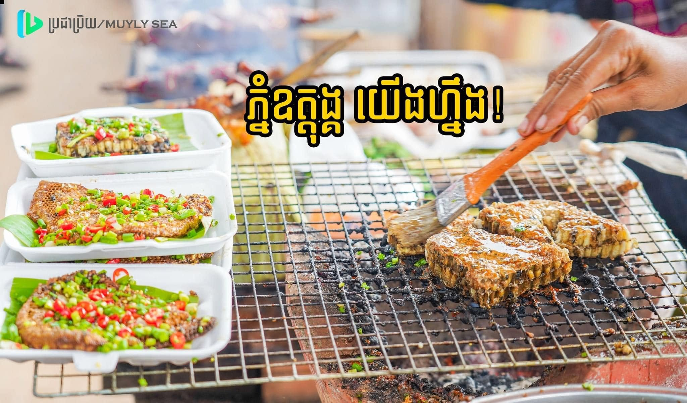
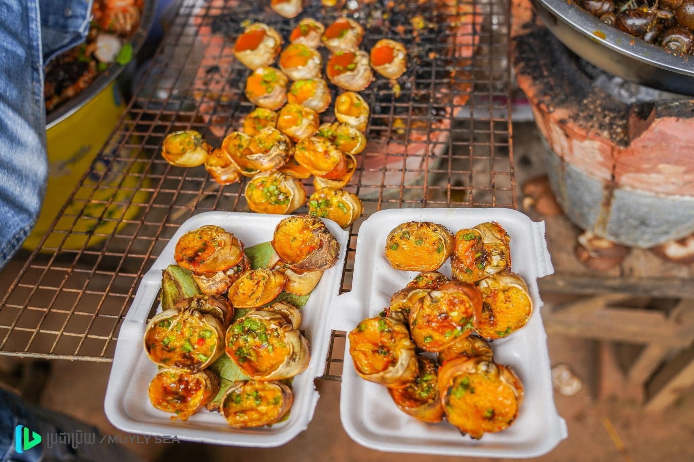
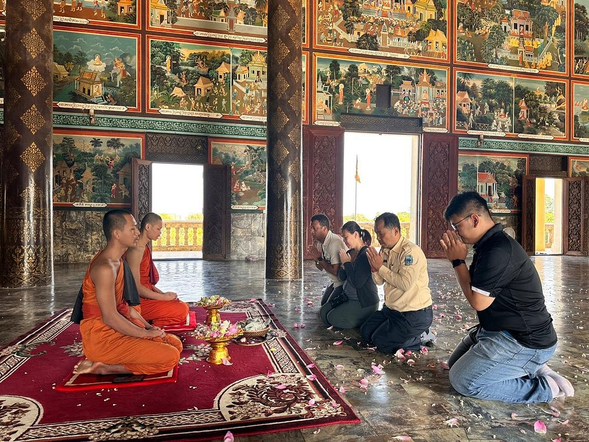
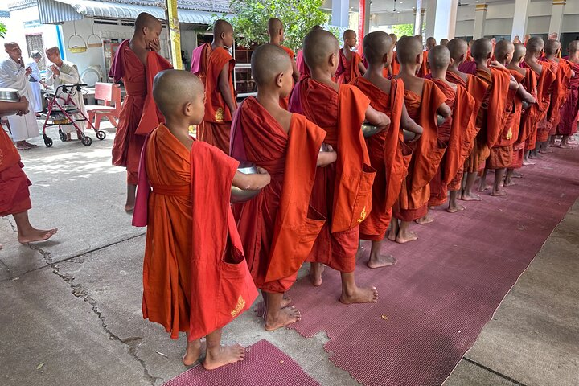

Food and Culture
Food

Grilled Spicy Honeycomb
A unique local delicacy found around Oudong Mountain, grilled spicy honeycomb is prized for its rich, chewy texture and bold smoky flavor. Seasoned with a blend of Khmer spices and grilled over charcoal, it offers a delicious balance of savory, spicy, and slightly sweet notes. Popular among adventurous food lovers, this specialty provides visitors with an authentic taste of Cambodia's traditional street food culture.
Explore More
Grilled Crab Shell with Seafood Sauce
A popular street food enjoyed by visitors to Oudong Mountain, grilled crab shell with seafood sauce combines the rich flavor of crab with a savory, creamy filling served inside the shell. Grilled until golden and aromatic, the dish is topped with a flavorful seafood sauce that adds a delicious blend of sweetness, saltiness, and spice. Its unique presentation and satisfying taste make it a favorite snack for travelers exploring the area.
Explore MoreCulture

Buddhist Pilgrimage
Oudong Mountain is one of Cambodia's most important Buddhist pilgrimage sites. Throughout the year, devotees visit the mountain to pray, make offerings, and seek blessings at its sacred temples and stupas. The peaceful atmosphere makes it a meaningful destination for both worship and reflection.
Explore More
Monastic Life
Visitors often encounter Buddhist monks walking through the temple grounds or leading prayers. Their presence reflects the important role of Buddhism in Cambodian daily life and adds to the mountain's tranquil and spiritual environment.
Explore More